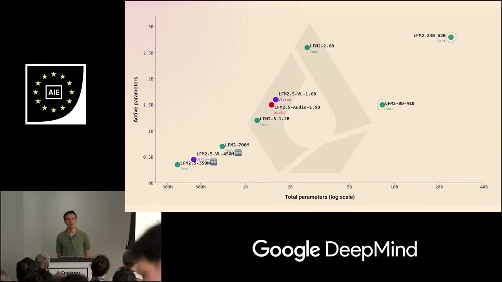
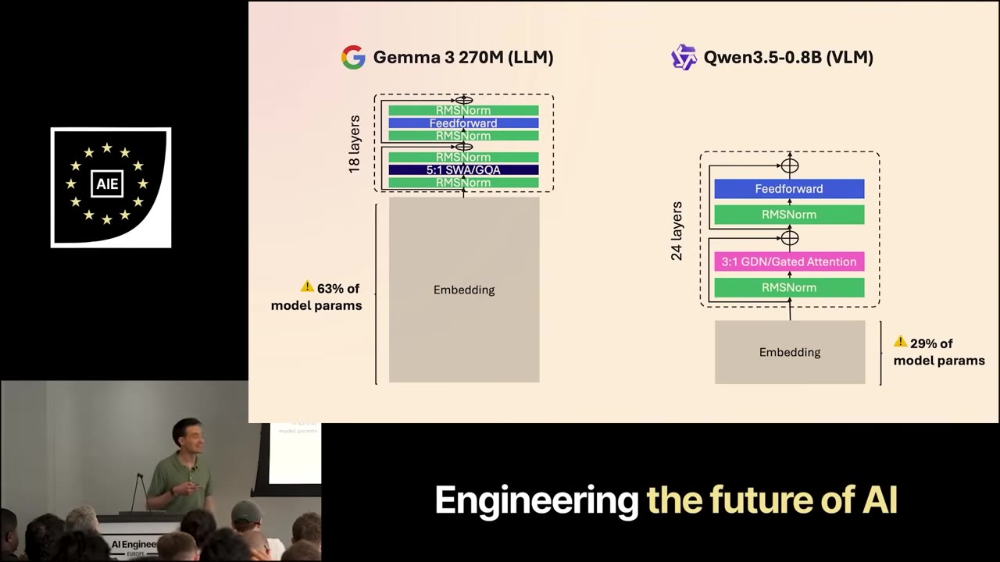
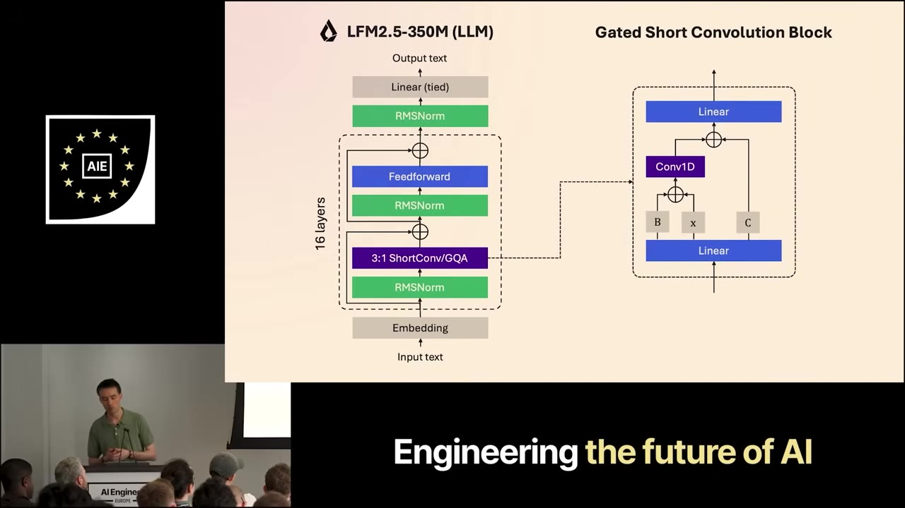
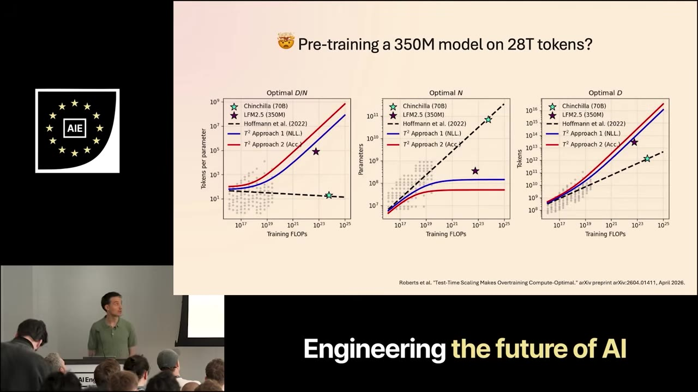
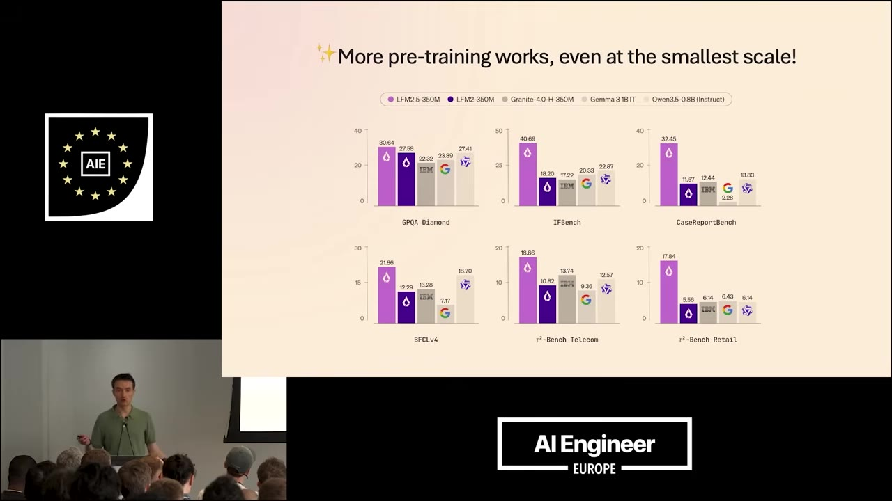
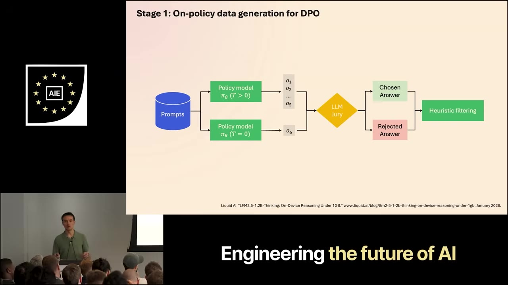
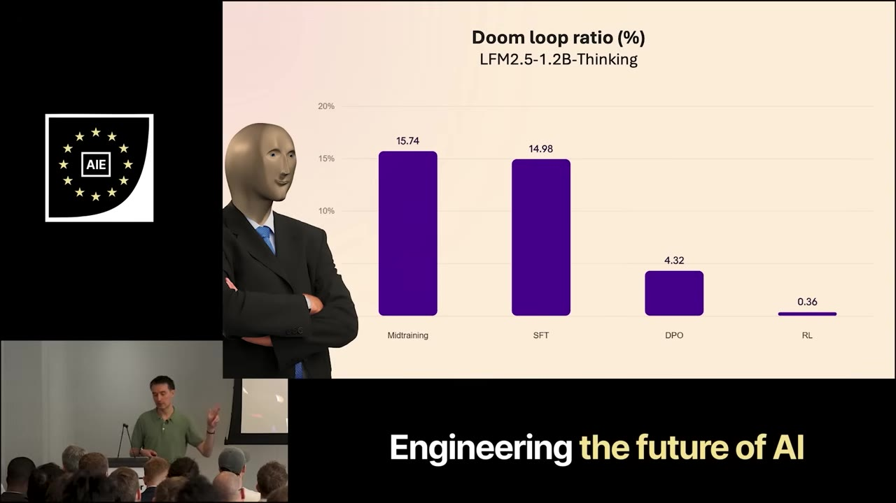

Maxim Labonne walks through what happens when you train tiny models — 350M to 24B parameters — specifically for on-device use. The short answer: they're not just scaled-down chatbots. They're memory-bound, task-shaped creatures that need a different training stack.
Watch on YouTubeLiquid AI focuses on edge models for on-device deployment — phones, cars, anywhere with compute constraints. Their lineup runs from 350M to 24B parameters. The week before this talk they released a VLM (450M); the week before that, a text model (350M). All on Hugging Face.
Small models are memory-bound because the hardware is what it is. Low knowledge capacity. Task-shaped. Not general-purpose chatbots — they're narrow, and that focus is a feature.

Gemma 3 270M (LLaMA-style with sliding window + GQA) and Qwen 3.5-0.8B (Gated DeltaNet + gated attention) are the smallest members of their respective families. Both adopt a hybrid architecture. But the embedding layer tells a different story.
In Gemma 3 270M, 63% of all parameters are in the embedding layer. In Qwen 3.5-0.8B, it's 29%. Those aren't reasoning parameters — they're distillation artifacts. The teacher models have huge vocabularies; the students absorb that bloat.
The effective size — the parameters that actually do reasoning — is much smaller. You can squeeze more performance from the same memory footprint by shrinking the embedding and reallocating.

LFM 2 uses short convolutions + GQA. The key insight came from on-device profiling, not theoretical work. Liquid AI profiled inference on two real targets — an AMD Ryzen AI Max 395 and a Samsung Galaxy S24 Ultra — and let the hardware speak.
The result: a gated short convolution block. On CPU, short convs are significantly faster than sliding window attention (Gemma 3), gated DeltaNet (Gemma 2.5), or gated linear attention. Lower memory use. Higher throughput. On GPU, the advantage holds at high concurrency.

LFM 2.5's training recipe has four stages: pre-training (28T tokens), supervised fine-tuning, preference alignment, and reinforcement learning.
28 trillion tokens for a 350M parameter model sounds absurd under Chinchilla scaling laws — Chinchilla says you should be compute-optimal at far fewer tokens. But performance keeps growing when you scale pre-training tokens, even at the smallest scale.
A recent paper by Roberts et al. on test-time scaling laws puts it another way: LFM 2.5 350M still hasn't trained enough. By their new laws, they should go further.

More pre-training works, and it works even at the smallest scale. These models are a lot cheaper to train than much bigger models.— Maxim Labonne
LFM 2.5 350M beats LFM 2 350M across every category:
The philosophy: target specific capabilities. It doesn't matter if the model isn't the best at math or encoding — people don't use edge models that way. Narrow focus is the point.

Doom looping: a model repeats the same sequence of words over and over, never stopping. It happens when three conditions collide — small model, reasoning mode, complex task.
Two solutions:
1. On-policy DPO data generation. Generate 5 rollouts at temperature 1.0 (diverse) + 1 rollout at temperature 0.0 (will doom loop). A jury LLM scores all of them. The doom-looped response gets rejected. The model learns to avoid it.
2. RL with verifiable rewards + n-gram repetition penalty. If the model doesn't produce a final answer, it gets no positive reward. Combined with temperature sampling for diverse rollouts and an n-gram penalty, doom loops become rare.

On LFM 2.5-1.2B-Thinking, measured across benchmarks:

Gemma 3.5 0.8B in reasoning mode? Over 50% doom loops. That's a scaled-down model with scaled-down problems. Liquid's approach treats small models as their own category.
SFT is not the right stage to fix doom looping. The tiny model is just a scaled-down version of bigger models — and that's not the approach we're taking at Liquid.— Maxim Labonne
Small models have low knowledge capacity — they'll hallucinate. But you can give them web search, and a tiny model that can Google anything you throw at it outperforms the base model by a lot.
Tiny models are actually very good at agentic tasks. What they need isn't knowledge — it's good reasoning to use tools reliably. A recursive LLM environment + Python lets them sidestep poor long-context.
:::